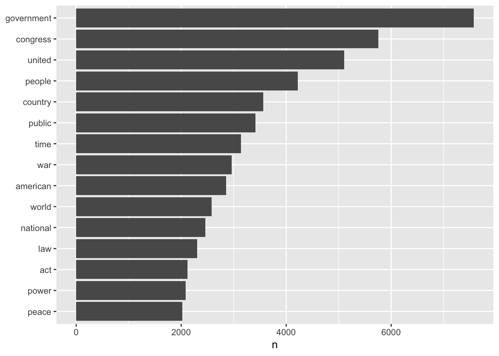
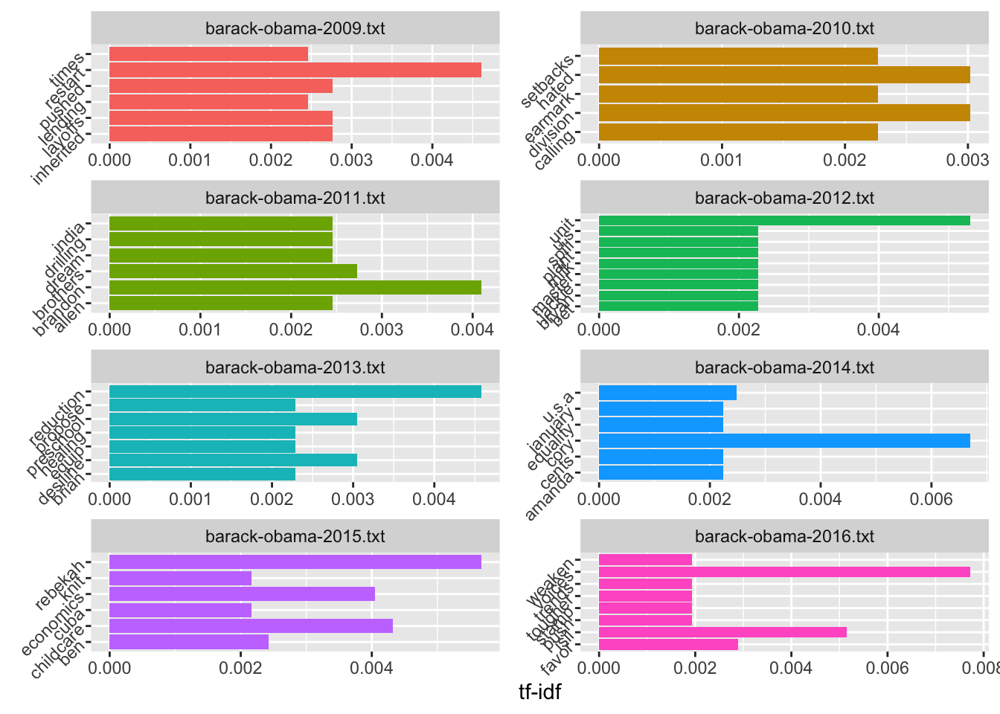
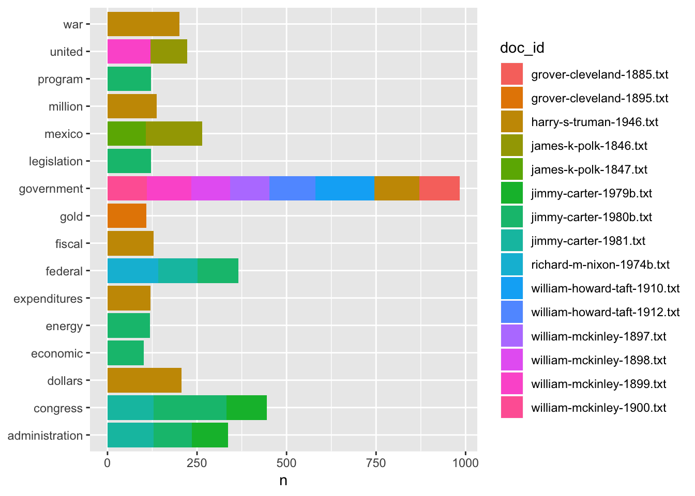
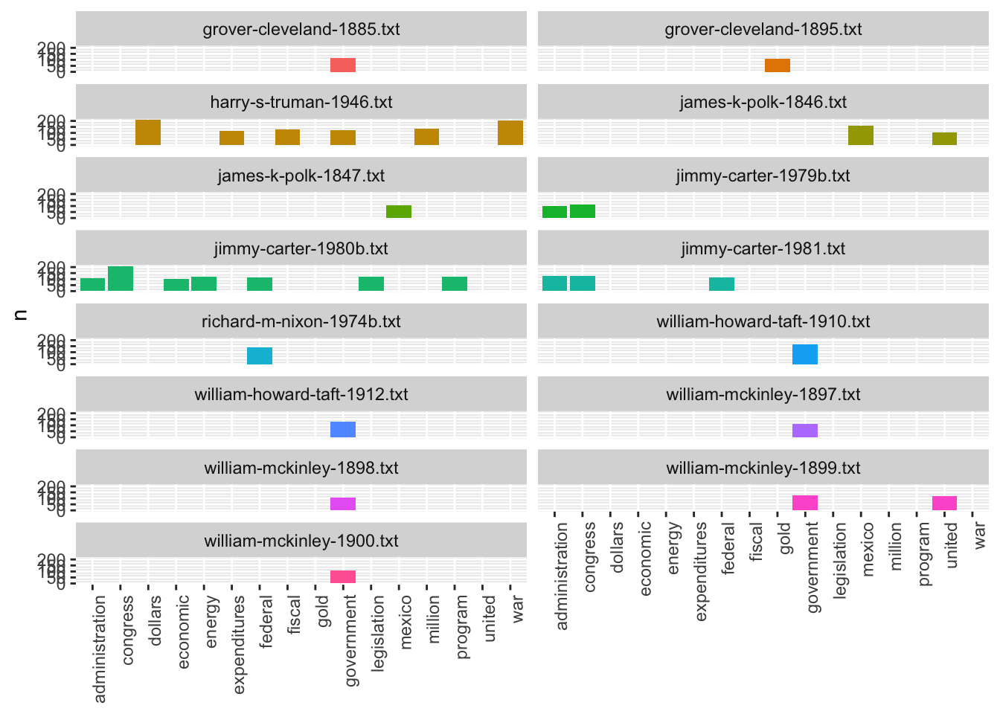
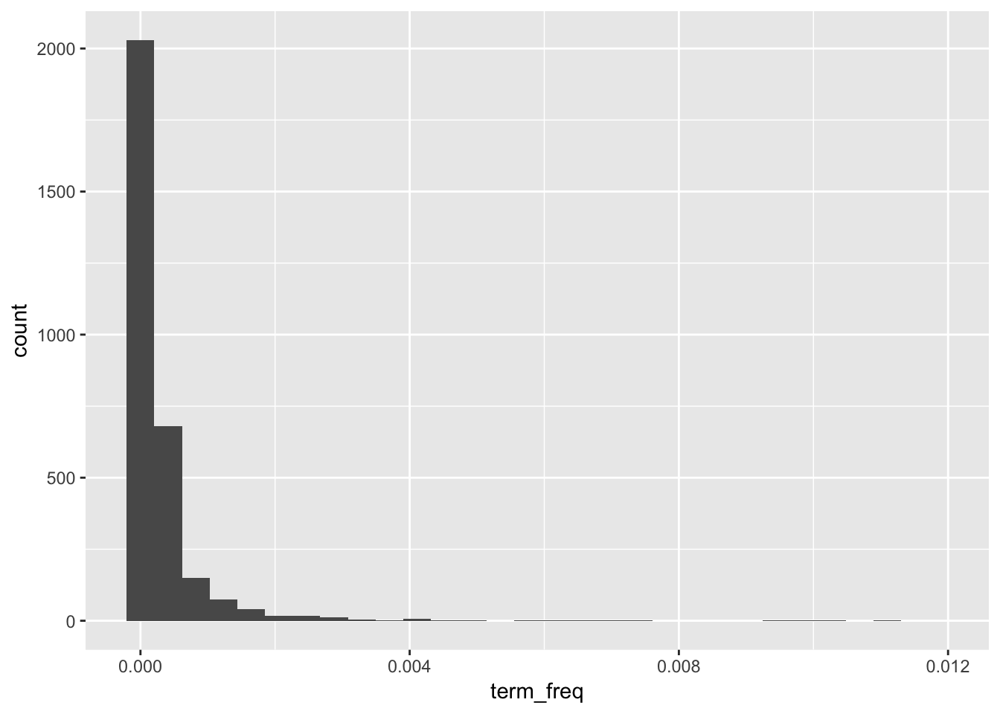
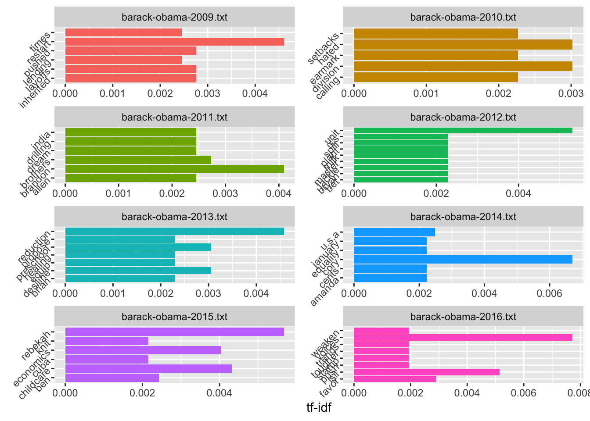

Chapter 2 Preparing Textual Data
Learning Objectives
- to come
- DTM
- n-grams
- co-ocurrence
First, we’ll load the libraries we need.
library(tidyverse)
library(tidytext)Let’s remind ourselves of what our data looks like.
tidy_sotu_words2.1 Frequencies
Since our unit of analysis at this point is a word, let’s do some straightforward counting to figure out which words occur most frequently in the corpus as a whole.
tidy_sotu_words %>%
count(word, sort = TRUE)We could start adding in a bit of visualization here. Let’s show the most frequent words that occur more than 2000 times.
tidy_sotu_words %>%
count(word, sort = TRUE) %>%
filter(n > 2000) %>%
mutate(word = reorder(word, n)) %>%
ggplot(aes(word, n)) +
geom_col() +
xlab(NULL) +
coord_flip()
What if we’re interested in most used words per speech?
# Count words by book
doc_words <- tidy_sotu_words %>%
count(doc_id, word, sort = TRUE)
# Calculate the total number of words by book and save them to a tibble
total_words <- doc_words %>%
group_by(doc_id) %>%
summarize(total = sum(n))
# Join the total column with the rest of the data so we can calculate frequency
doc_words <- left_join(doc_words, total_words)#> Joining, by = "doc_id"doc_words Let’s graph the top words per book
doc_words %>%
filter(n > 100) %>%
ggplot(aes(word, n, fill = doc_id)) +
geom_col() +
xlab(NULL) +
coord_flip()
That’s cool looking, but let’s split it into facets so we can see by speech.
doc_words %>%
filter(n > 100) %>%
ggplot(aes(word, n, fill = doc_id)) +
geom_col(show.legend = FALSE) +
xlab(NULL) +
facet_wrap(~doc_id, ncol = 2) +
theme(axis.text.x = element_text(angle = 90, hjust = 1))
We could keep cleaning this figure up by setting some minimum sizing, determining the spacing between y-axis labels better, and so forth, but now we’ll accept it as showing some sense of variation across speeches where certain words are used most.
What if we want to check the most highly common words per speech for a single president? We could filter this doc_words dataset based on the president’s name being in the doc_id, but I think it’s easier to filter from the initial tidy data and recount.
tidy_sotu_words %>%
filter(president == "Barack Obama") %>%
count(doc_id, word, sort = TRUE) %>%
filter(n > 20) %>%
ggplot(aes(word, n, fill=doc_id)) +
geom_col() +
facet_wrap(~doc_id, ncol = 2) +
theme(axis.text.x = element_text(angle = 90, hjust = 1))
2.2 Term frequency
Sometimes, a raw count of a word is less important than understanding how often that word appears in respect to the total number of words in a text. This ratio would be the term frequency.
doc_words <- doc_words %>%
mutate(term_freq = n / total)
doc_words Let’s graph the term frequency for one of these speeches so we can understand the frequency distribution of words over a text.
doc_words %>%
filter(doc_id == "harry-s-truman-1946.txt") %>%
ggplot(aes(term_freq)) +
geom_histogram(show.legend = FALSE) +
xlim(NA, .012)#> `stat_bin()` using `bins = 30`. Pick better value with `binwidth`.#> Warning: Removed 2 rows containing non-finite values (stat_bin).#> Warning: Removed 1 rows containing missing values (geom_bar).
This should make sense. Most words are used relatively rarely in a text. Only a few have a high term frequency.
We could keep filtering this data to see which terms have the high frequency, thus maybe increased significance, for different presidents and different particular speeches. We could also subset based on decade, and get a sense of what was important in each decade. We’re going to take a slightly different approach though. We’ve been looking at term frequency per document. What if we want to know about words that seem more important based on the contents of the entire corpus?
2.3 Tf-idf
For this, we can use term-frequency according to inverse document frequency (tf-idf). Tf-idf meansures how important a word is within a corpus by scaling term frequency per document according to the inverse of the term’s document frequency (how many documents within the corpus in which the term appears divided by the number of documents).
We could write our own function for tf-idf, but in this case we’ll take advantage of tidytext’s implementation.
doc_words <- doc_words %>%
bind_tf_idf(word, doc_id, n)
doc_wordsThe tf-idf value will be:
- lower for words that appear in many documents in the corpus, and lowest when the word occurs in virtually all documents.
- high for words that appear many times in few documents in the corpus, this lending high discrimiatory power to those doucments.
Let’s look at some of the words in the corpus that have the highest tf-idf scores, which means words that are particularly distinctive for their documents.
doc_words %>%
select(-total) %>%
arrange(desc(tf_idf))These results seem appropriate given our history. To understand the occurence of the years we might need to look more closely at the speeches themselves, and determine whether the years are significant or whether they need to be removed from the text. It might be that even if they don’t need to be removed from the text overall, they still need to be filtered out within the context of this analysis.
In the same way that we narrowed our analysis to Obama speeches earlier, we could subset the corpus before we calculate the tf-idf score to understand which words are most important for a single president within their sotu speeches. Let’s do that for Obama.
obama_tf_idf <- tidy_sotu_words %>%
filter(president == "Barack Obama") %>%
count(doc_id, word, sort = TRUE) %>%
bind_tf_idf(word, doc_id, n) %>%
arrange(desc(tf_idf))
obama_tf_idfBased on what you know of the Obama years and sotu speeches generally, how would you interpret these results?
Let’s try graphing these results, showing the top tf-idf terms per speech for Obama’s speeches.
obama_tf_idf %>%
group_by(doc_id) %>%
mutate(word = factor(word, levels = rev(unique(word)))) %>%
group_by(doc_id) %>%
top_n(5) %>%
ungroup() %>%
ggplot(aes(word, tf_idf, fill = doc_id)) +
geom_col(show.legend = FALSE) +
labs(x = NULL, y = "tf-idf") +
facet_wrap(~doc_id, ncol = 2, scales = "free") +
coord_flip() +
theme(axis.text.y = element_text(angle = 45)) #> Warning in mutate_impl(.data, dots): Unequal factor levels: coercing to
#> character#> Warning in mutate_impl(.data, dots): binding character and factor vector,
#> coercing into character vector
#> Warning in mutate_impl(.data, dots): binding character and factor vector,
#> coercing into character vector
#> Warning in mutate_impl(.data, dots): binding character and factor vector,
#> coercing into character vector
#> Warning in mutate_impl(.data, dots): binding character and factor vector,
#> coercing into character vector
#> Warning in mutate_impl(.data, dots): binding character and factor vector,
#> coercing into character vector
#> Warning in mutate_impl(.data, dots): binding character and factor vector,
#> coercing into character vector
#> Warning in mutate_impl(.data, dots): binding character and factor vector,
#> coercing into character vector
#> Warning in mutate_impl(.data, dots): binding character and factor vector,
#> coercing into character vector#> Selecting by tf_idf
TODO: document-term matrix
TODO: length over time…other similar measures
TODO: variation between the different presidents?
TODO: say something about sentiment analysis and topic modeling